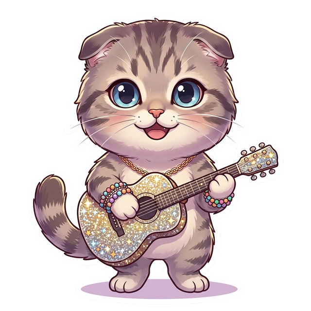

❄️ 永遠の冬
大切な人がメンタルヘルスの問題に苦しんでいるのを見守る無力感を描く。「あなたにとっては永遠の冬」——助けたいのに助けられない切なさ。
▶ Official Lyric Video

🐱 Did You Know?
Loading...
VERSE 1
He says, "Why fall in love, just so you can watch it go away?"
「なぜ恋をする？消えていくのを見るだけなのに」と彼は言う
He spends most of his flights getting pulled down by gravity
飛んでもいつも重力に引き戻される
I call, just checkin' up on him
私は電話する、様子を見るだけ
He's up, 3AM, pacin'
彼は午前3時に起きてうろうろしてる
PRE-CHORUS
He says he's fine, but it's not just a phase I'm in
大丈夫って言うけど、これは一時的なものじゃない
CHORUS
I'd fall to pieces on the floor if you weren't around
あなたがいなかったら床に崩れ落ちる
Too young to know it gets better
良くなるって知るには若すぎる
I'll be summer sun for you forever
永遠にあなたの夏の太陽でいる
Forever winter if you go
あなたが行ったら永遠の冬
VERSE 2
He seems fine most of the time, forcing smiles and never minds
ほとんどの時間は大丈夫そうに見える、無理に笑って気にしないふり
His laugh is a symphony, when the lights go out, it's hard to breathe
笑い声は交響曲、でも灯りが消えると息ができない
I pull at every thread trying to solve the puzzles in his head
彼の頭の中のパズルを解こうと全ての糸を引く
Live my life scared to death he'll decide to leave instead
彼が去ることを選ぶかもしれないと怯えて生きてる
PRE-CHORUS
I call, just checkin' up on him, he's up, 5AM, wasted
電話する、彼は午前5時に酔い潰れてる
Long gone, not even listening
もう遠く、聞いてもいない
My voice comes out screamin'
叫び声になってしまう
CHORUS
I'd fall to pieces on the floor if you weren't around
あなたがいなかったら床に崩れ落ちる
Too young to know it gets better
良くなるって知るには若すぎる
I'll be summer sun for you forever
永遠にあなたの夏の太陽でいる
Forever winter if you go
あなたが行ったら永遠の冬
BRIDGE
If I was standing there in your apartment, I'd take that bomb in your head and disarm it
あなたのアパートにいたら、頭の中の爆弾を解除する
I'd say, "I love you even at your darkest and please, don't go"
「最も暗い時でもあなたを愛してる、行かないで」って言う
FINAL CHORUS
I'd fall to pieces on the floor if you weren't around
あなたがいなかったら崩れ落ちる
Too young to know it gets better
良くなるって知るには若すぎる
I'll be summer sun for you forever
永遠にあなたの夏の太陽でいる
Forever winter if you go
あなたが行ったら永遠の冬
But I'll be his summer
でも私は彼の夏でいる
🐱 Did You Know?
Loading...
VERSE 1
He seems fine most of the time, forcing smiles and never minds
ほとんどの時間大丈夫そう、笑顔を作って気にしないふり
But everything is wrong inside, everything is dark
でも中身はすべて間違ってて、すべて暗い
He says, "It's been a long cold February, kind of month"
「長く寒い2月みたいな月だった」と言う
CHORUS
And if you fall, I'll pick you up, I'll be there
倒れたら起こす、そこにいる
If all you want is more of the same, I'm right here
同じものが欲しいだけなら、私はここ
He says that everything's been forever winter
すべてが永遠の冬だったと言う
But I'll be your summer sun forever
でも私が永遠の夏の太陽になる
VERSE 2
Too young to know it gets better
良くなると知るには若すぎる
I'll be the road that you take, and the place that you go
あなたが行く道になる、あなたが行く場所になる
And the bed underneath his bones is made up, don't call me again
骨の下のベッドは整えられてる、もう電話しないで
CHORUS 2
And I'll be right here, if it's forever winter
永遠の冬でも、私はここにいる
He says that everything's been forever winter
すべてが永遠の冬だったと言う
But I'll be your summer sun forever
でも私が永遠の夏の太陽になる
BRIDGE
And I'll be right here, spending every Christmas with you
私はここにいる、毎年クリスマスをあなたと過ごす
I'll hold you through the darkness, hold you through it all
暗闇の中で抱きしめる、すべてを通して
OUTRO
Please don't go, I keep waiting for you
お願い行かないで、ずっと待ってる
He's forever winter
彼は永遠の冬
But I'll be his summer
でも私が彼の夏になる
❄️「Forever Winter」はメンタルヘルスへの深い洞察。大丈夫そうに見える人の内面の暗闇を描く。